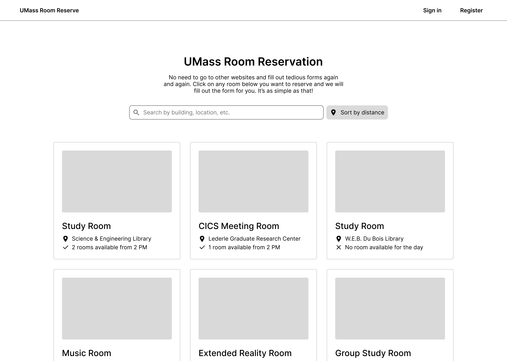
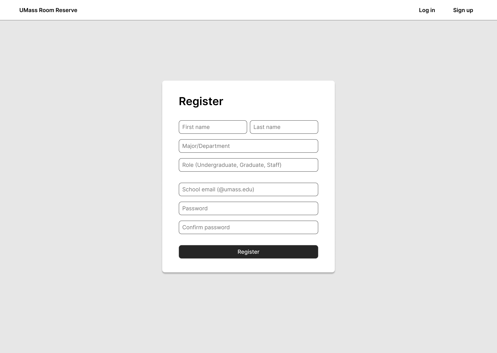
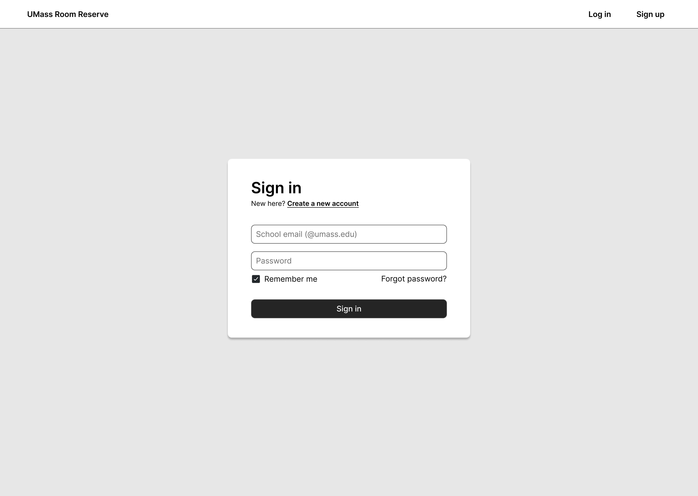

Overview
With the id “overview,” this section should provide a 150-200 word explanation of the web application your team aims to design and develop. Use an <h2> tag for the section title. Focus on the project's vision, emphasizing the real-world problem it intends to solve and its target audience, rather than delving into interface details.
Opening paragraph.
$PLACEHOLDER$
Conclusion paragraph.
Application Parts
Identified by the id “application-parts,” describe at least three critical components of your application in separate paragraphs under this section, totaling 200-300 words. Title this section with an <h2> tag and ensure each application part discussed represents a primary functionality of your web application. Here is an example of a one component of an application.
$PLACEHOLDER$
$PLACEHOLDER$
$PLACEHOLDER$
$PLACEHOLDER$
Conclusion paragraph.
Data Requirements
Under the id “data-requirements,” structure this section to include an introduction, four main paragraphs detailing the top types of data your application will handle, and a conclusion, making up 300 words in total. Title the section with an <h2> tag. Focus on high-level data needs rather than specific database designs or records.
Opening paragraph.
$PLACEHOLDER$
$PLACEHOLDER$
$PLACEHOLDER$
$PLACEHOLDER$
Conclusion paragraph.
Wireframes
Below is the home page that aims to have the users start using our website right away. A search bar and a collection of room cards are immediately accessible, offering details such as location and real-time availability which we find most people would care about when booking a room. There is also a location-based sorting feature provides a practical benefit, dynamically ordering room options according to their distance from the user.
The sign-in page has a simple and straightforward design. There are features such as "stay logged in" and "forgot password" which can make it more convenient for the users. The registration form focuses on collecting the standard data typically required for on-campus room reservations. We can store the information in the database and use it to autofill future forms, which will save users' time.
 The reservation form is all about making things quick and easy for the users. As soon as the user lands on the page, there will be a big 'Reserve' button right at the top so the users don't have to scroll down and click when their information is already filled out. The user's details will be stored in our database, and the form will automatically fill in stuff like name, email address, major, etc. Autofilling is the main feature of this project and hopefully using this, people at UMass, especially those are new, will no longer have to look around multiple websites to reserve the room the want.

Real-World Connection
Filling the same forms on different websites have been a tedious task for everyone. One typical example of this is booking flights, where users previously had to visit multiple airline websites and fill out the same information repeatedly. Companies such as Expedia or Google Flights addressed this hassle by compiling forms into a single website, which helps save people's time significantly. Another example would be filling out job applications, which follows the same form structure for pretty much all jobs. Simplify helps save applicants' time by letting the students only fill out their information once and automatically fill out the application for them every time they apply.
Similarly, we found navigating different websites to book rooms in UMass and input the same information over and over again frustrating. This problem has been something a lot of our friends have also experienced. We often book rooms to do group study in the UMass and the process of finding the website and fill out the same form every time is just tedious.
This is why we decided to build UMass Room Reserve website as a final project. By gathering all the forms together and having the users fill out only once, the website will save time for students and faculty at UMass, much like the flight booking platforms streamlined travel arrangements by offering a single point of access for multiple airlines.
Integrative Experience
This project satisfies the IE requirements as it provides an opportunity to directly apply concepts and skills developed throughout my coursework and personal experiences to address a real-world problem. Working on a software project with a team requires good programming practices, which we can use what we learned from CS 220 such as functional programming using high-order functions, designing test cases and APIs, handling errors and utilizing the publish/subscriber model for this project. Additionally, we can also use sorting algorithms learned in CS 187 to dynamically order rooms based on distance from the user, making sure that most relevant options are prioritized. The network communication principles introduced in CS 230 form the foundation of our client-server interactions, which is also necessary for designing the communication between front-end and back-end
Furthermore, our team aims to deliver an exceptional user experience. Principles which Minh learned in PSYCH 100 will guide choices about information presentation and navigation to optimize usability. Meanwhile, the user-centric design practices emphasized in CS 325 which Bao took will inform the interface and overall workflow of the site. Justin's background in data science will be invaluable for designing an effective database structure, and Patrick's expertise in backend development will ensure a stable and responsive platform.
This project represents a culmination of our university education and personal growth. Communication skills and critical thinking are required to ensure a smooth development process even if there might be unexpected errors and setbacks. In this project, we will integrate what we learned and apply them to a meaningful and interdisciplinary challenge solving a real-world problem.